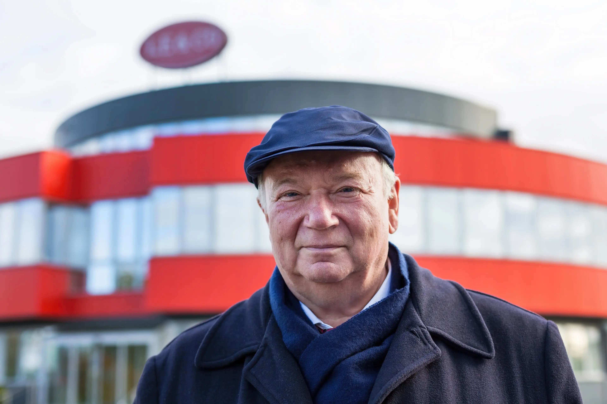
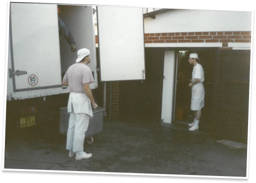
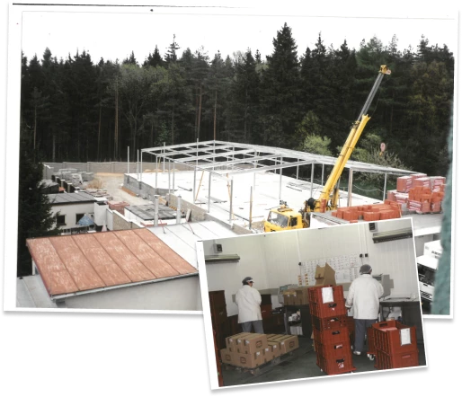
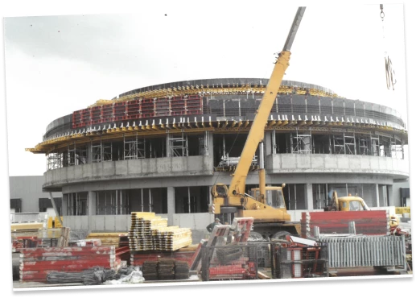
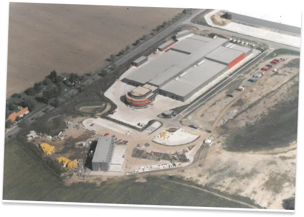

компанія хаус маркет це сімʼя, яка була заснована в 1991 році в
сімейному гаражі з декількома друзями


1991
Заснування компанії
Компанія була заснована в маленькому гаражі сімейного будинку
1994 - 1998
Поступове завершення будівництва заводу в Горні Джирчани
Від гаража компанія продовжувала розвиватися, спочатку до правої
частини сімейного будинку, потім до всього будинку. Поступово на
прилеглій землі було побудовано виробничий цех.

2006
Будівництво нового виробничого цеху в Йірні (Київ - лівий берег)
Виробництво було побудовано завдяки великим зусиллям пана Ing. Їржі
Ленц, який сам керував усім будівництвом і наглядав за окремими
підрядниками.
2007
Завершення будівництва сучасного виробництва в Жирному
Перенесення виробничого цеху з Горні Джирчани до Джирни зі
збереженням виробництва.


2015
Зелена інвестиція - парова котельня
У зв’язку зі зростанням споживання електроенергії при термічній
обробці було прийнято рішення побудувати парову котельню, яка
відповідає нашій меті – зменшити вуглецевий слід..
Наше майбутнє
Despite its 30-year history, we remain a company in the hands of the
founder's family